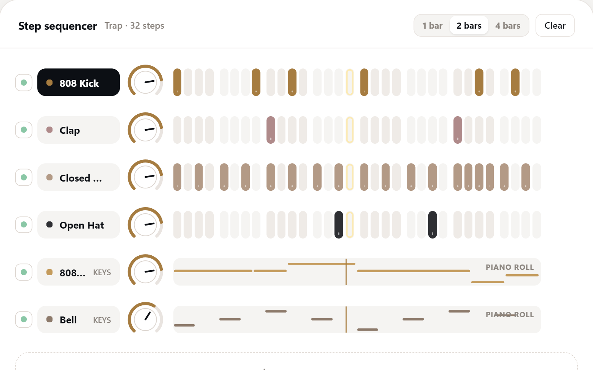

Step sequencer
Build rhythms by clicking squares.
Paint drums across the grid, right-click to erase and scroll to set how hard each hit lands. Drop a new sound on a row to swap it while keeping your rhythm, or drop a groove to fill it with a classic pattern.
- 1, 2 or 4-bar patterns
- 12 ready-made grooves, from four-on-the-floor to dembow
- Swing control for a human feel
